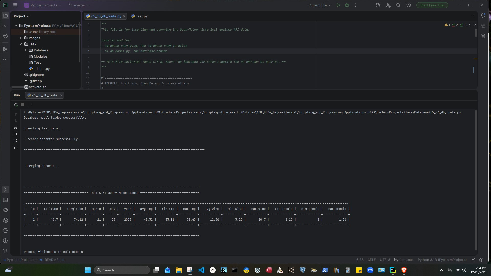
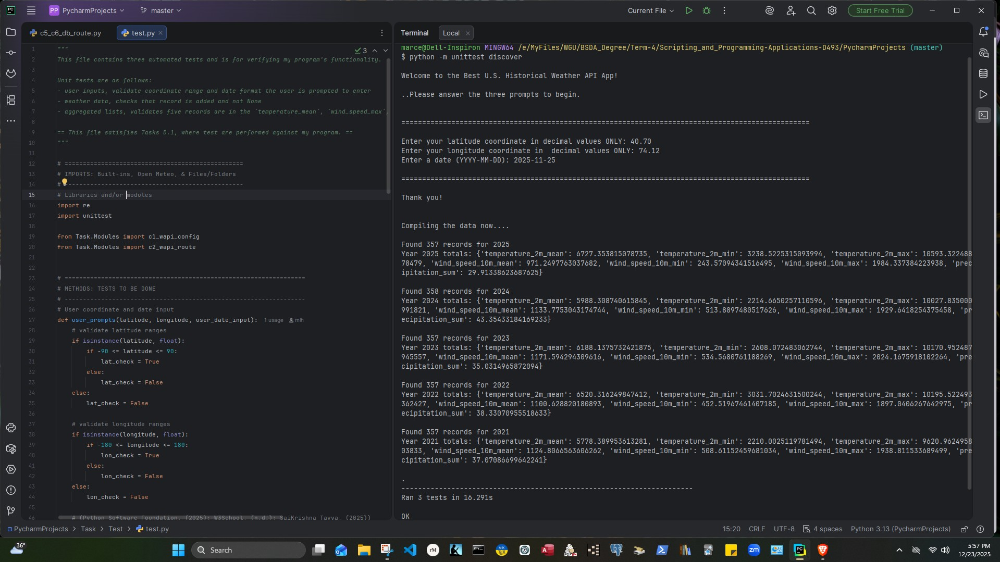
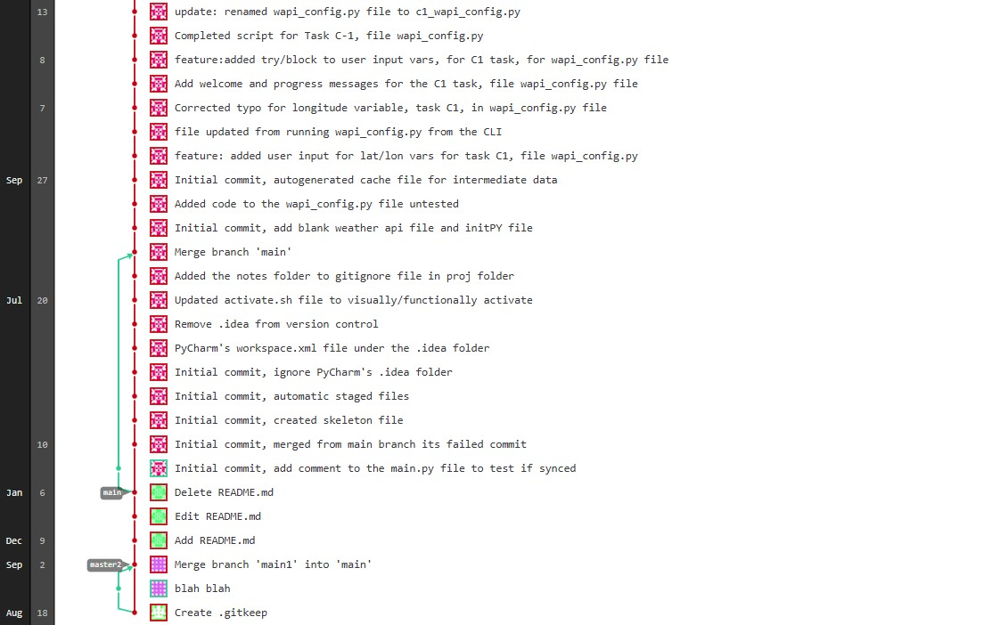
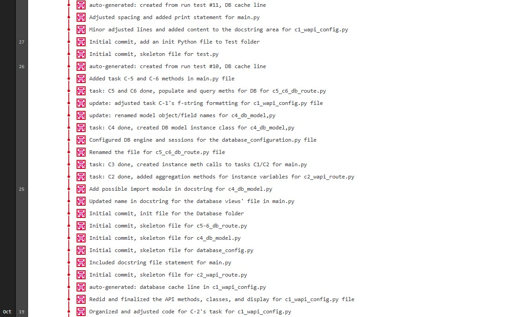
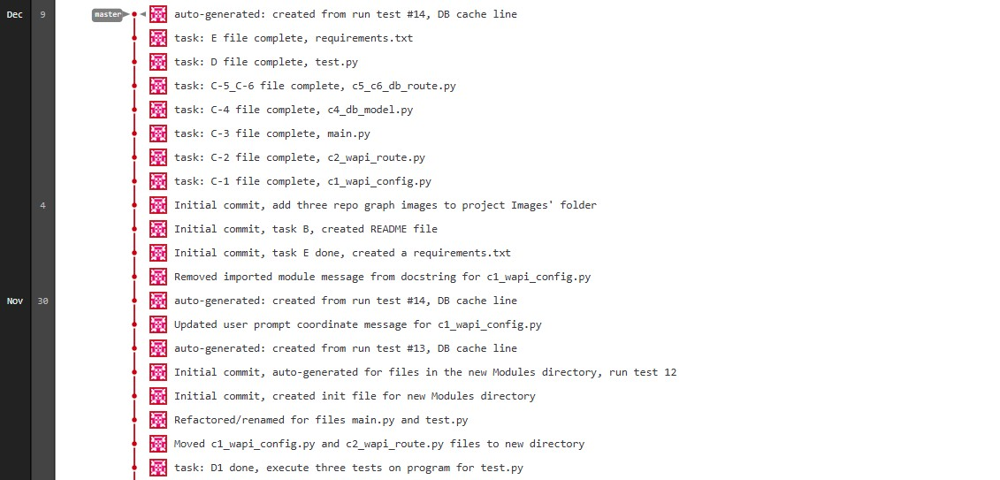
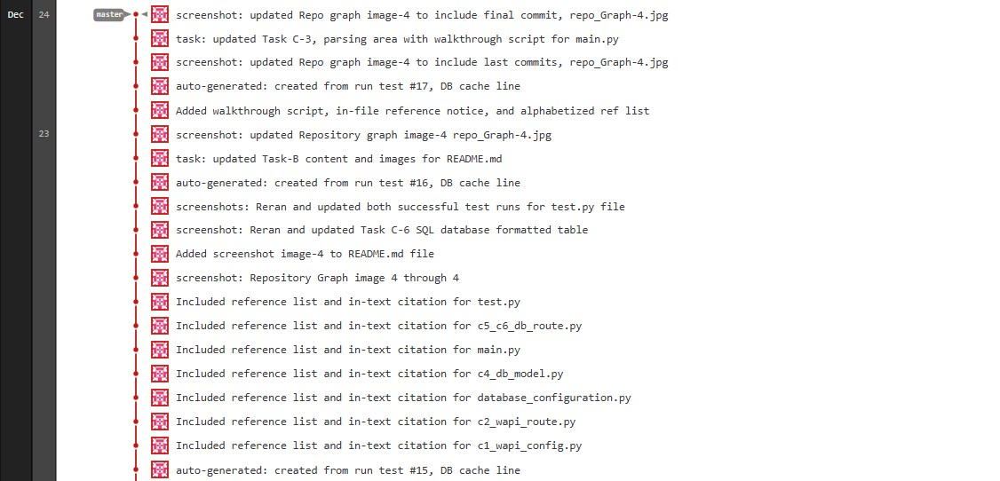

Historical Weather API
Overview
This project is a Performance Assessment for WGU's D493 course, Scripting and Programming – Applications. The assignment scenario cast me as a data analyst at an event-planning company needing historical weather data to help choose the right coverings, such as tents, canopies, and other temporary shelters, for outdoor events. Rather than hard-coding a location, I built the program around user input: whoever runs it enters their own latitude/longitude coordinates and a target date, and the app pulls and aggregates the previous five years of weather data, including average, minimum, and maximum temperature, wind speed, and precipitation, for that specific date and location.
My goal was less about the event-planning framing itself and more about the underlying skills: building something a user could actually engage with end to end, from raw coordinate/date input, through API retrieval and database storage, and back out as a formatted, queryable result.
Analysis
The rubric's task breakdown, parts C1 through C6 plus the unit tests in D, drove most of the structural decisions in this project. I mostly followed that scaffolding rather than designing the workflow myself. I started with a class holding the instance variables for location and date: latitude, longitude, month, day, and year, plus fields for the five-year aggregated temperature, wind speed, and precipitation (average, minimum, and maximum for each). From there, I wrote a set of methods that call the Weather API to pull mean temperature (°F), maximum wind speed (mph), and precipitation sum (inches) for the chosen location and date across the most recent five years. main.py ties it together by creating an instance of that first class and calling those methods directly.
The second class mirrors the same fields but as a SQLAlchemy ORM model, creating a table in SQLite so the data could be stored, then queried back and printed in a formatted view for the chosen coordinates and date.
One of the bigger headaches was project structure and imports. I split c1_wapi_config.py and c2_wapi_route.py into their own folder to keep things modular, but that created import problems, especially inside test.py, which kept throwing ModuleError no matter how I tried to alias the imports. I ended up importing from the full path (from Task.Modules import ...) rather than aliasing, which resolved it without needing to configure a setup-tools file.
The trickiest part by far, though, was the five-year aggregation logic. I originally had start_date and end_date both pointing to the same complete_date variable, which meant every "five-year" aggregation was silently pulling the same single day's value five times instead of averaging across five distinct years. The fix was to hard-code the month and day and leave only the year as a variable, so each of the five iterations pulled a different year's data for the same calendar day, which also had the side benefit of making the year range dynamic based on whatever date the user entered. From talking to classmates, this tripped up a lot of other people in the course too, so it seems like a fairly common gotcha in how the task is worded versus how the aggregation actually needs to work.
Results
Running the program end-to-end for the coordinates 40.70, 74.12 and the date November 25, 2025, produced the following record after being stored in and queried back from the SQLite database:
| latitude | longitude | month | day | year | avg_tmp | min_tmp | max_tmp | avg_wind | min_wind | max_wind | tot_precip | min_precip | max_precip |
|---|---|---|---|---|---|---|---|---|---|---|---|---|---|
| 40.7 | 74.12 | 11 | 25 | 2025 | 41.32 | 33.81 | 50.45 | 12.56 | 5.25 | 20.7 | 2.15 | 0 | 1.56 |

The unit test file (test.py) runs three automated tests: one validating the user's coordinate and date input, one confirming a weather data record was added successfully and isn't None, and one checking that the aggregated lists contain five records each, one per year, for temperature, wind speed, and precipitation. All three passed:

That same terminal output shows the underlying five-year pull the tests were validating against: the app found between 357 and 358 daily records per year across 2021 through 2025, then computed the mean, minimum, and maximum temperature, wind speed, and total precipitation for each year before rolling those into the single stored record above.
Finally, the GitLab repository graph confirms the incremental commit history across parts C1 through C6, with a message and comments logged for each completed part:




Conclusion
Building this weather API application was a rewarding project, and one I'd like to keep building on. Adding a city and state lookup for the entered coordinates, so the app can display an actual place name instead of just latitude and longitude, is still on my list to add someday.
The biggest takeaway for me, though, was around testing. I used to feel intimidated by the testing portion of projects like this, but writing the unit tests for this app, validating user input, confirming records were stored correctly, and checking that five years of data were aggregated properly, changed that. Seeing all three tests pass gave me a much clearer sense of how simple, and how necessary, testing actually is. I also came away more comfortable with the automation side of the workflow, from committing progress through each task to running the test suite as part of verifying the program worked as expected.